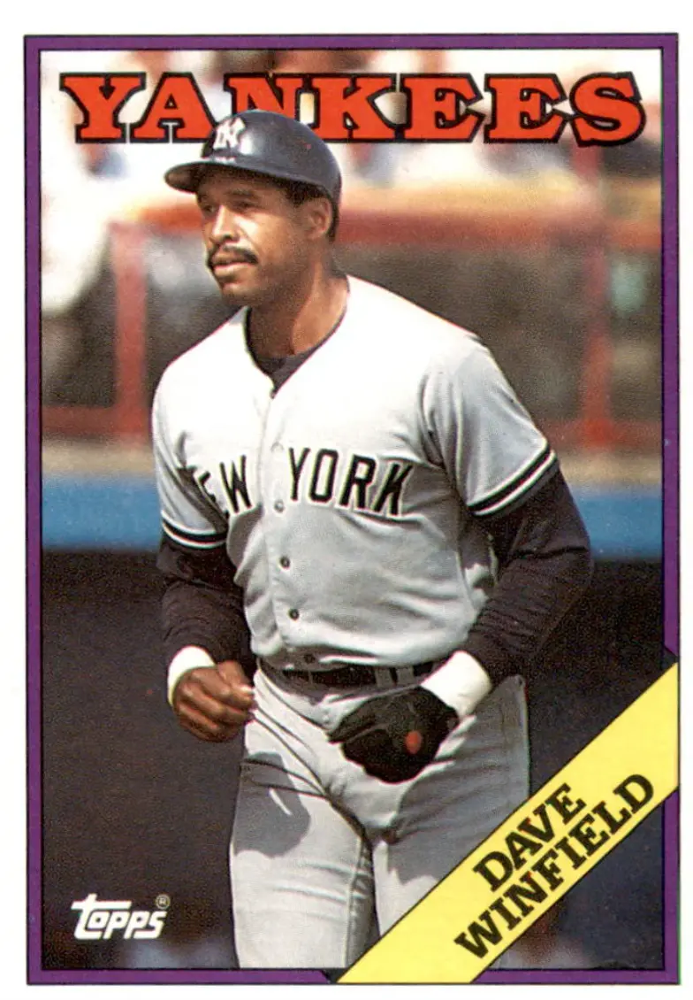

Dave Winfield "Mr. May"
Career Highlights & Facts
(Facts are AI-generated and may require verification)
Player Biography
Dave Winfield January 4, 2012 / in BioProject - Person 3000 Hits Hall of Fame 1970s All-Stars , 1980s All-Stars 1992 Toronto Blue Jays , 1995 Cleveland Indians , Minnesota Natives , San Diego Padres 50th Anniversary / by admin Doug Skipper Imposing, confident, complex, charismatic, and controversial, Dave Winfield ranks as the greatest multisport athlete to emerge from the state of Minnesota. Drafted by five teams in five leagues in three major sports, Winfield chose baseball and compiled a first-ballot Hall of Fame career. At 6-feet-6 and 220 pounds, the powerfully-built right-hander wielded a menacing black bat. His long, sweeping swing started with a distinctive hitch. Then, with sudden ferocity, he uncoiled and laced line drives to all parts of the park, sometimes clearing fences and walls, more often slamming into them. He ran the bases aggressively and with purpose. He was a good basestealer, but a great baserunner. He played defense with equal enthusiasm. Athletic and graceful, he gobbled up ground with long strides, sported a steady glove and boasted one of the most lethal throwing arms in the history of the game. Though he was blessed with tremendous physical ability, it was Winfield’s preparation and determination, along with his ability to make adjustments at the plate and in the field that made him a player greater than his tremendous physical talent. Winfield grew up in St. Paul and excelled in baseball and basketball at St. Paul Central High School and then at the University of Minnesota. “Winnie” averaged 9.0 points and 5.8 rebounds in 46 Gopher basketball games and posted a 19-4 record for the baseball squad. While at Minnesota, Winfield was a First Team All-America in 1973 and a two-time All-Big Ten selection in 1971 and 1973. He was 9-1 in his senior season with a 2.74 earned-run average and 109 strikeouts in 82 innings pitched. He batted .385 with 33 runs batted in in 130 at-bats. Winfield jumped straight from college to the major leagues, and compiled 3,110 hits, 465 home runs, and a .283 batting average in 22 seasons with the San Diego Padres, New York Yankees, California Angels, Toronto Blue Jays, Minnesota Twins, and Cleveland Indians. He played in 2,973 games, batted 11,003 times, collected 1,093 extra-base hits, stole 223 bases, made 5,012 putouts and 168 assists, and appeared in 12 All-Star Games and two World Series. He was just the fifth player in the history of baseball to get 3,000 hits and 450 home runs. But there is so much more to the man than the numbers. There is Winfield’s charity. He was the first active athlete to establish a charitable foundation. For 22 years, the David M. Winfield Foundation provided health care, holiday meals, game tickets, educational scholarships, and hope to underprivileged families. Under Winfield’s leadership, the foundation developed “Turn It On,” an international community action campaign to prevent substance abuse. For his charitable work, Winfield has earned the YMCA Brian Piccolo Award for Humanitarian Service, baseball’s first-ever Branch Rickey Community Service Award, the American League’s Joe Cronin Award, the Josh Gibson Leadership Award, and Major League Baseball’s Roberto Clemente Award. He was also awarded an honorary doctorate from Syracuse University 1 and recognition by Derek Jeter ’s Turn2 Foundation. Jeter is one of a number of players who credit Winfield’s philanthropic efforts as the inspiration for their own charitable organizations. 2 There is Winfield’s business acumen. In addition to serving as president of the Winfield Foundation for years, the big slugger from St. Paul – who once played for Padres owner and McDonald’s founder Ray Kroc – possessed a string of Burger Kings, art galleries, a lighting design and contracting company, and a diverse and powerful stock portfolio. He has served on the board of directors for President Bill Clinton’s National Service Program, the Morehouse School of Medicine and the Century Council and on the advisory boards for the Peace Corps and MLB’s Baseball Players Trust. 3 Since December 2013, he has been a special assistant to the executive director of the Major League Baseball Players Association, Tony Clark . There is Winfield’s literacy and culture. He is a prolific reader of fiction and nonfiction, collaborated on his best-selling 1988 autobiography, and outlined his plan of action to revitalize baseball in 2007 in Dropping the Ball . He penned Turn It Around, There’s No Place Here for Drugs , authored The Complete Baseball Player, and collaborated on Frank White ’s They Played for the Love of the Game: Untold Stories of Black Baseball in Minnesota . A music lover, he served as host and narrator for the Baseball Music Project, a series of concerts that featured songs about the national pastime. 4 There is Winfield’s race-relations leadership. As an African American youngster in St. Paul, and later as a major-league baseball player, Winfield encountered racism and battled it with dignity and determination. Granted a public forum by virtue of his occupation, Winfield has spoken and written about race relations, providing a powerful voice in the community. He helped develop the idea of the honoring former Negro League stars at MLB’s 2008 draft. 5 Winfield’s guidance is not restricted to race relations. A highly respected motivational speaker with a smooth, silky voice, Winfield has addressed clubs, schools, and business about sports, education, health, fitness, teamwork, substance-abuse prevention, and youth issues. There is also Winfield’s ego. “Much of America’s current self-esteem crisis could be overcome just with Winfield’s excess,” Sports Illustrated observed in 1992. “Nobody knows better than Winfield that he is handsome, buffed, richly appointed with all the options, well read, well-spoken and well paid.” 6 And then there is Winfield’s pride. After eight successful seasons in San Diego, Winfield signed a contract with New York Yankees owner George Steinbrenner that made him the most highly paid player in baseball. But Steinbrenner quickly developed buyer’s remorse, the two squabbled, and “The Boss” publicly declared that Winfield was not worth the money, disparaged him, and tried to trade him. “Steinbrenner, who did so much to make Winfield’s life miserable in the eight-plus years he played for the Yankees, never appreciated the type of player he had,” the New York Times observed. “All he did was look at Winfield’s hitting statistics. When they lacked lusty numbers, he criticized Winfield. Unlike players and managers from other teams, Steinbrenner never understood the contributions Winfield made with his outfield defense and his base running.” 7 Eventually Steinbrenner even went so far as to pay a known gambler to discredit his star slugger. “Winfield would become the target of owner Steinbrenner’s downright vicious crusade to force him out,” the New York Times observed later. “No doubt he is having the last laugh, but there are times when Winfield sounds like someone who succeeded in spite of his father, and sometimes feels the hurt an abused child must feel all his life.” 8 Stung by Steinbrenner’s criticism that he was great in the regular season and awful in his first postseason, Winfield cast off the “Mr. May” label with a strong 1992 World Series performance. He earned the Babe Ruth Award as the player with the best performance in the fall classic, and placed his decade of discontent with the Yankees behind him. After Winfield revived his career in California, won a World Series in Toronto, collected his 3,000th career hit in Minnesota, and closed out his playing days in Cleveland, he and the Boss made a form of peace. 9 In recent years, Winfield also made peace in his complicated personal life. Devoted to the mother who raised him, he reconnected with his father after her death in 1988. That same year he married, and formed a relationship with a child from a previous relationship. Later, he fathered two more children with his wife, Tonya. As a special assistant to Clark, the Players Association director, he travels the world as an ambassador for baseball, delivers motivational speeches, continues his charitable work, and spends time with his family. 10 David Mark Winfield was born in St. Paul on October 3, 1951 – the day that Bobby Thomson hit “The Shot Heard Round the World,” the pennant-winning home run for the New York Giants. David was the second son for Frank Charles Winfield, a World War II veteran and a Pullman porter on the Great Northern Railroad’s flagship train, the Empire Builder , and Arline Vivian (Allison) Winfield, a St. Paul native. Frank, who lived in Duluth before he entered military service, met Arline through her brother. The couple divorced by the time David turned 3, and Frank eventually moved to Seattle, remarried and became a skycap for Western Airlines. Though they saw one another on occasion, David and his father remained estranged for much of their lives. 11 Arline, who never remarried, raised David and his older brother, Stephen, in their home in a row house on Carroll Avenue, west of the Minnesota state capitol and just south of the swath that Interstate 94 now cuts through St. Paul. Arline earned a modest living at her job in the St. Paul School District’s audio-visual department, and raised her sons with the assistance of her mother, Jessie Hunt Allison, who lived a block away, and an extended family of aunts, uncles, and cousins. Arline stressed the value of education to her sons, showed them educational films she borrowed from the school district, and taught them a new word every night. The family lived in a primarily African American neighborhood and worshipped at the African Methodist Episcopal St. James Church on Central Avenue, a couple of blocks north of their home. 12 “More than anything Ma and I did , I learned from the example she set, learned the value of education, family, work and a positive attitude,” he wrote. 13 As youngsters, Dave and Steve played baseball and hockey in St. Paul, and followed the Minnesota Twins when they moved to the Upper Midwest in 1961. Bill Petersen, a former University of Minnesota catcher, coached the pair at the Oxford Playgrounds, and the Winfield boys later led his Attucks-Brooks Post 606 baseball team to two American Legion state championships. 14 The brothers also excelled at St. Paul Central High School. Steve lettered in baseball three times, captained the team his senior season, 1968, and was named to the school’s Athletic Hall of Fame in September 2007. Younger brother Dave earned All-St. Paul and All-Minnesota honors in both baseball and basketball for the Minutemen, and was named to the Athletic Hall of Fame in 1995. At the end of his senior year, Dave stood 6-feet-6 when on June 5, 1969, the Baltimore Orioles selected him in the 40th round of the amateur draft. He passed up that opportunity, and accepted a baseball scholarship from the University of Minnesota, where older brother Steve was already enrolled. The scholarship covered only tuition, and as a freshman Winfield commuted 12 miles by public bus each day to attend class, play forward for the freshman basketball team and pitch for the freshman baseball squad. He went 4-0 for the Gopher frosh in the spring of 1970, then 8-0 in the Metropolitan (St. Paul) Collegiate League that summer, before he and a friend were caught snatching a pair of snow blowers from a local business. Winfield pleaded guilty to a charge of felony theft and was sentenced to three years in the St. Cloud Penitentiary, a sentence that was suspended, and years later, based on his public service and good works, expunged. 15 Winfield made a repentant return to campus and embraced his second chance. He and Steve led a team dubbed the Soulful Strutters to the campus intramural basketball championship, and were invited to scrimmage regularly against the Gopher junior varsity. 16 After he posted an 8-3 record and a Big Ten-best 1.48 earned-run average for Dick Siebert ’s Minnesota varsity baseball team, Winfield pitched and played outfield for the Fairbanks Goldpanners of the Alaska Summer League, coached by college baseball legend Jim Dietz. 17 Back on campus for his third year in the fall of 1971, Winfield worked out with the junior varsity basketball team, where he caught the eye of Gopher assistant coach Jimmy Williams. Williams invited him to try out for new head coach Bill Musselman, and Winfield earned a spot on a veteran varsity squad that included Jim Brewer, Ron Behagen, Clyde Turner, Keith Young, Bob Murphy, Bob Nix, and Corky Taylor. The veterans were slow to accept Winfield, but he won them over with his hard work, hustle, and powerful elbows. 18 “He was the best rebounder I ever saw,” Musselman, who would go on to coach in the NBA and the American Basketball Association, said. 19 “Making the team, I give up my half baseball scholarship for a full basketball scholarship,” Winfield’s autobiography said. “Anyway, for the first time I can go to classes, go to practices, live away from home, and not have to worry whether I’ll be able to afford my meals, my books, or transportation.” 20 If life was more settled off the court, it was frantic on the hardwood, where Musselman coached his players to be aggressive and physical, a style Winfield embraced. “From Musselman I learned to get on that man, to get inside his jersey, his shorts, his jock. I learned first and foremost to be there. To get up in his face when he tried to dribble, and to stay there when he tried to shoot.” 21 On January 25, 1972, “Musselman’s Musclemen” became too aggressive. Trailing late in a Big 10 showdown with Ohio State before a frenzied Williams Arena crowd, Taylor committed a hard foul on Ohio State center Luke Witte. The Gophers had been unhappy with the way Witte was throwing elbows during the game. When Taylor helped Witte up off the floor, he kneed him in the groin. Behagen who had fouled out earlier, jumped in off the bench, and stomped on Witte’s head and neck. Quickly, the floor was a sea of players, fans, coaches, and officials. Winfield, who had been sitting on the sidelines, entered the fray, running across the floor to throw punches “like I was spring-loaded.” Winfield later told Sports Illustrated, “Hey, I’m not denying I was involved. There was a fight with my team. I was swinging.” 22 Though he was later blistered by media members, he escaped the punishment assessed Behagen and Taylor, season-ending suspensions. Instead, he stepped into Behagen’s spot in the starting lineup. As one of the Gophers’ “Iron Five,” Winfield led Minnesota to its first conference championship in 35 years and an appearance in the NCAA tournament. The baseball season went less well. In an early-season game against Michigan, Winfield damaged tendons around his right elbow and missed the remainder of the season. Despite the injury, Dietz asked him back for the summer, and Winfield hit .315 with 15 home runs for the Goldpanners as an outfielder, and struck out 36 batters as a relief pitcher. He was named team MVP after he led Fairbanks to the ASL title. 23 Winfield returned to campus and guided Minnesota’s basketball team to a second-place Big Ten finish and a berth in the National Invitational Tournament in New York. When the Gophers were knocked out, he joined Siebert’s baseball team in Texas, where he lost his season debut. After that, Winfield was magnificent. He won 13 straight, posted a 2.74 ERA, and hit .385 with 33 RBIs to earn first-team All-America honors. Appointed team captain, Winfield led Minnesota to the Big Ten title and to the College World Series in Omaha. Along the way, he pitched a nine-inning 1-0 shutout with 14 strikeouts against Oklahoma. On the tournament’s final day, the Gophers lost to Arizona State, then met Southern California. Thorough eight innings, Winfield limited a Trojan team that included Roy Smalley and Fred Lynn to just one hit and struck out 15. Leading 7-0, but after nearly 140 pitches, Winfield ran out of gas and surrendered a pair of runs in the ninth. With one out, he left the mound and moved to left field. USC rallied and won 8-7. Despite a third-place finish for the Gophers, Winfield was named the College World Series MVP. After the season, four different teams in four leagues in three sports drafted Winfield. San Diego made him the fourth pick of the major-league baseball draft on June 5. The Atlanta Hawks picked him in the fifth round of the NBA draft, the Utah Stars drafted him in the sixth round of the American Basketball Association senior draft, and – even though he never played high-school or college football – the Minnesota Vikings selected Winfield in the 17th round of the NFL draft. Winfield, Texas Christian’s Mickey McCarty, and Colorado’s Dave Logan are the only players ever drafted by professional baseball, football, and basketball teams. Winfield signed with San Diego for $15,000 and jumped straight to the major leagues at the age of 21. He commenced his assault on big-league pitchers with a single and a run scored in four at-bats against the Houston Astros on June 19, 1973, then collected hits in each of his next five games. Used most often in left field and against left-handers by manager Don Zimmer , the St. Paul slugger collected 39 hits, with four doubles, a triple, and three home runs, batted .277 and drove in 12 runs in his 56-game rookie campaign. He also began to buy blocks of tickets to Padres games for families who otherwise could not afford to attend. 24 Over the next three seasons, the youngster continued to provide tickets to poor families and power and speed to the Padres lineup. Between 1974 and 1976, he slugged 64 doubles, 10 triples, and 48 homers, despite playing his home games in cavernous Jack Murphy Stadium . He stole 58 bases, with a career-high 26 in 1976. John McNamara , who replaced Zimmer at the start of the 1974 season, used Winfield in left and center, but most often penciled in the youngster into right field. Winfield remembered, “After the All-Star Break, McNamara said to me, ‘Kid, I’m going to give you a chance to play every day. Play well and the job is yours.” 25 He did, and for his efforts, the young slugger, who created a scholarship fund for minority student athletes from St. Paul that still exists, saw his pay rise to around $40,000 in 1975 and $57,000 in 1976. 26 Winfield was unhappy with the contract the Padres offered in 1977, and elected to play out his option at a 10 percent pay cut. 27 The contract squabble pitted him against Padres general manager Buzzie Bavasi , and when it looked as though Winfield might be dealt, signs appeared in the ballpark that urged, “Keep Dave, Trade Buzzie.” 28 In early July, with the two sides $100,000 apart, Winfield’s friend and representative, Al Frohman, came up with an ingenious solution. Under Frohman’s plan, The David M. Winfield Foundation for Underprivileged Youth, a nonprofit 501(c)(3) organization, was established. The team paid the foundation the $100,000 difference between what Winfield wanted and the Padres were willing to pay, the foundation handed it right back to the club in exchange for 100,000 game tickets at $1 apiece, and the foundation distributed the tickets to underprivileged families. 29 Everybody won. Winfield got the four-year, $1.4 million contract he wanted, the Padres sold an extra 100,000 tickets, thousands of kids got to sit in the Dave Winfield Pavilion at San Diego’s Jack Murphy Stadium – and Frohman picked up a sizable commission. 30 Winfield signed the contract in early July, in the midst of his breakout season. Just 25, he batted .275 with 25 home runs and 92 runs batted in, scored 104 times, clubbed 29 doubles and 7 triples, and was named to the National League All-Star team. Winfield made the first of his 12 consecutive appearances in the midsummer classic, smacked a double and drove in the winning runs with a single off Sparky Lyle in the NL’s 7-5 victory. The Dave Winfield Foundation drew support from a number of corporations, formed a relationship with the Scripps Foundation to provide free medical checkups to needy families, delivered an antidrug message, and provided holiday dinners and scholarships to those who otherwise could not get them. 31 In 1978 Winfield was named the first team captain in Padres history, was the NL Player of the Month for June, hit .300 for the first time, slugged 24 homers, 30 doubles, and 5 triples, drove in 97 runs, scored 88, and stole 21 bases. When San Diego hosted the All-Star Game, the Winfield Foundation bought its usual allotment of pavilion tickets. On local radio, the slugger from St. Paul, scheduled to play in his second All-Star Game, urged “all the kids of San Diego” to attend. When they responded by showing up in droves, Major-League Baseball opened practice sessions for the first time, starting a tradition that continues to the present day. 32 It was a highlight in a special season for San Diego. Under new manager Roger Craig , with a roster that included Winfield, Rollie Fingers , Gaylord Perry , and rookie shortstop Ozzie Smith , the Padres posted a winning record for the first time, though they finished fourth in the NL’s Western Division. A year later, San Diego slid back to 25 games under .500, though Winfield enjoyed what may have been his finest season. The 27-year-old batted .308 again, with 34 home runs, 27 doubles, 10 triples, and 15 stolen bases. Winfield drove in a career-best and NL-high 118 runs, scored 97 runs, won his first Gold Glove, and finished third in the league’s Most Valuable Player Award voting behind Keith Hernandez and Willie Stargell . He drew a career-high 85 walks, and led the league in intentional passes with 24. “I became a lot more patient,” Winfield said. “I learned the strike zone a lot better and I realized that sometimes it’s better to take a walk than to make an out on a bad pitch.” 33 Winfield grew less patient with the Padres, and there were suggestions that he was not a team player. “If the Padres go places, I will be a main reason,” he said. “But it they falter, I’ll still shine.” 34 With his contract set to expire at the end of the 1980 season and no extension in sight, Winfield played in all 162 games for Jerry Coleman , his sixth manager in eight years, and won another Gold Glove, but slipped to 20 home runs, 87 RBIs, 23 steals, and a .276 batting average. When the season ended, so did his tenure as a Padre. Not everyone was sad to see him go. “Dave Winfield thinks he is holier than thou,” Ozzie Smith said. “He always acted as if it were his God-given right to tell other people how to do things.” 35 On December 15, 1980, Yankees owner George Steinbrenner signed Winfield to a 10-year, $23.3 million contract. Slugger Dave Winfield was leaving San Diego to play at Yankee Stadium and to become baseball’s highest-paid player. It seemed like a match made in heaven; it would begin a decade of pure hell between the two men. From the start, there were problems. Steinbrenner, who took great pride in his negotiation skills, didn’t understand or didn’t fully read the cost-of-living escalator clause that Frohman, a man Sports Illustrated’ s Rick Reilly described as “a rumpled and retired New York caterer, a two-pack-a-day, fast-talking, 5 ft., 4 in., 220-pound chunk of walking cholesterol – with no experience as a sports agent,” had negotiated for Winfield. 36 That clause made the contract worth $7 million more than the $16 million that Steinbrenner thought it was worth, and when alerted by a media member, the Boss was livid. 37 It was made worse when Frohman, who collected a 15 percent, $3.5 million commission on the deal, reportedly told the New York Daily News , “If he ever touches a hair of my boy’s head … I’ll blow the lid. I’ve got stuff on George that if it ever came out, he would be in big trouble. It’s very easy to be friends with George if you have blackmail on him.” 38 After heated exchanges, Winfield and Steinbrenner reached a compromise – an addendum to the contract that adjusted the cost-of-living increase, reportedly for $3 million to $4 million less over the life of the contract. Winfield also reached an agreement with the Padres, mediated by Commissioner Bowie Kuhn , which called for the Dave Winfield Foundation to meet a $35,000 contractual obligation to continue to buy tickets for underprivileged children to attend Padres home games. Winfield had already arranged for $3 million ($300,000 per year for 10 years) of his salary to be donated to the foundation, which funded the Dave Winfield nutrition center at Hackensack University Medical Center and collaborated with Merck Pharmaceuticals to create a bilingual substance-abuse prevention program called “Turn it Around.” 39 In his first season in pinstripes, Winfield hit .294 with 13 homers and 68 RBIs in 105 games in the strike-shortened 1981 season. He batted .350 with two doubles and a triple to lead the first-half-champion Yankees over the second-half champion Milwaukee Brewers in the AL Divisional Series. The Yankees went on to beat Oakland in the AL Championship Series, but with Reggie Jackson and Graig Nettles injured, and Winfield collecting only one hit in 22 at-bats, lost to the Los Angeles Dodgers in six games in the World Series, a loss that stuck firmly in Steinbrenner’s craw. After his lone hit, a single, Winfield, perhaps in jest, asked for the ball, which made the Boss even madder. 40 The Yankees never returned to the postseason with Winfield in the lineup, though he was one of the top players in baseball over the next seven years. He was selected to play in the All-Star Game each year, won five Gold Gloves, and drove in 744 runs. In 1982 the 30-year-old slugger clubbed 37 home runs and drove in 106 runs, batted .280, and slugged a career-best .560 for musical chairs managers Bob Lemon , Dick Howser , and Clyde King . A year later, Winfield batted .283 with 32 homers and 116 RBIs for Billy Martin , but the most notable day of his season came on August 4, 1983. Warming up in the outfield before the bottom of the fifth inning, Winfield hit and killed a seagull with a throw at Toronto’s Exhibition Stadium . When he tipped his cap in a mock salute to the bird, the hometown crowd reacted by hurling obscenities and objects at him. When the game ended, Winfield was escorted to the Ontario Provincial Police station, booked on charges of cruelty to animals and forced to post a $500 bond before he was released, Martin joked, “It’s the first time he’s hit the cutoff man.” 41 After the charges were dropped the next day, Winfield remarked to the media. “I am truly sorry that a fowl of Canada is no longer with us.” 42 Although Winfield attempted to placate them, 43 Blue Jays fans booed Winfield every time he appeared in Toronto until he joined the Blue Jays in 1992. 44 In 1984 Winfield and Yankees teammate Don Mattingly waged a dramatic and wrenching race for the AL batting title. Winfield homered 19 times, drove in 100 runs, and batted .340, but Mattingly collected four hits – and a standing ovation each time he batted – against Detroit on the season’s final day to finish at .343. The two walked off the field together with clasped hands after the finale, but Winfield was clearly hurt that many of his teammates – and the Yankee ownership – had openly rooted for Mattingly, who was White, over Winfield, a Black man. “Most of their teammates were clearly pulling for Mattingly, raising questions about the possibility of race as a factor,” the New York Times observed. 45 “I’ve experienced racism in my life,” Winfield told sportscaster and writer Art Rust Jr. “It was all around me when I was on the Yankees and competing with Don Mattingly for the batting title. Here we both were, two guys on the same team, fighting one another for the same thing against a background of manipulative media and the perceptions of hundreds of thousands of fans that were created by that media. There was a vast difference in the amount of encouragement each of us got from the press and the public.” 46 Winfield cleaned out his locker and left without speaking to the media after the final game, and some suggested he was resentful of Mattingly. “There was nothing between Donnie and I,” Winfield later said. “We lived different lives. He was a young player who had a lot of support. I just know what I experienced the entire year. It was much different than my teammate did at the same time.” 47 Already strained by the Boss’s buyer’s remorse and his attempt to deal his big slugger to Texas in 1984, the relationship between Steinbrenner and Winfield worsened in 1985, though New York’s best all-around player drove in 114 runs, batted .275, scored 105 times and clubbed 26 home runs for Yogi Berra and Martin. Late in the season, with the Yankees out of the postseason for a fourth straight year, the Boss said bitterly, “Where is Reggie Jackson? We need a Mr. October or a Mr. September. Winfield is Mr. May.” 48 Winfield later told the New York Times , “It was irreverent, it was off-color, it was improper, it doesn’t fit. I always rejected it. It doesn’t apply. It was an inappropriate remark at the time. I didn’t appreciate it then.” 49 Nor did he appreciate Steinbrenner’s attempts – public or private – to ruin his reputation, even as he smacked 76 homers and drove in 308 runs between 1986 and 1988 for Lou Piniella and again under Martin. In 1986 Steinbrenner ordered Piniella to platoon Winfield; when he refused, the owner was livid. 50 In 1987 the Boss began to withhold payments he owed to his star slugger to be donated to the Winfield Foundation, despite three court orders to make the payments. Winfield and his new agent, Jeffrey Klein, endured lengthy, heated meetings with Steinbrenner’s acerbic attorney, Roy Cohn, often on game days. 51 When Winfield sued, the Boss countersued to have Winfield removed from leadership from the foundation, suggesting that Winfield was running the foundation for personal gain and that his star slugger could not be trusted. A report in Newsday suggested that the foundation spent $6 for every $1 it gave away; Steinbrenner’s lawyers provided the numbers. “There is no way to fathom what was being done to me,” Winfield told Reilly of Sports Illustrated . “It was immoral, improper and reprehensible. It was a battle for everything, your performance, your credibility. Do you know what it’s like to have people fooling with your career?” 52 Steinbrenner continued to make his managers bench Winfield or move him down in the batting order, tried to trade him to the Detroit Tigers for Kirk Gibson in 1987, and stepped up the efforts just before Winfield’s 1988 autobiography, Winfield, A Player’s Life , was published. 53 But with 10 seasons in the majors and five for the same team, Winfield could not be traded without his consent. At times, Winfield was able to joke about the situation. “These days baseball is different. You come to spring training; you get your legs ready, your arms loose, your agents ready, your lawyer lined up.” 54 After setting an AL record with 29 RBIs in April 1988, he quipped, “We go on to May, and you know about me and May.” 55 Whatever levity he might have felt faded away in the Fall of 1988. His mother, Arline, died of breast cancer in October; he suffered a herniated disk and endured offseason back surgery. He was forced to miss the entire 1989 season, which ended his string of 12 straight All-Star Game appearances. And when it looked as though things between him and Steinbrenner could not get worse, they did. Back in 1981, Frohman had introduced Winfield to Howard “Howie” Spira, a gambler with alleged Mafia connections, and arranged for Winfield to make a $15,000 payment owed to Frohman instead to Spira. Five years later, Spira approached Winfield and asked for money in exchange for information that “would ruin Steinbrenner.” After Winfield refused, Spira visited Steinbrenner, who was desperate for any information that would make his highly paid player look bad, and the Boss made a secret, illicit deal with the mercenary gambler. Eventually, Spira publicly accused Winfield of betting on baseball, and in the shadow of the Pete Rose investigation, the commissioner’s office launched another inquisition. The investigation uncovered no evidence that Winfield had bet on baseball, but revealed that Steinbrenner had paid Spira $40,000 for his dubious information. The investigation also discovered that Steinbrenner had suggested turning over “potentially damaging” information about the Winfield Foundation to the Internal Revenue Service. 56 On June 30, 1990, Commissioner Fay Vincent ordered Steinbrenner to resign as the club’s general partner and banned him from day-to-day operation of the team for life, a sanction that was lifted 2½ years later. 57 Spira was later found guilty of trying to extort an additional $70,000 from Steinbrenner, and sentenced to 30 months in prison for his role in the sordid affair. 58 In the shadow of the inquiry, Winfield began the 1990 season in pinstripes. Angry that the Yankees left him off the All-Star ballot, he batted just .213 over 20 games with a pair of home runs and six runs batted in before the club traded him to the California Angels on May 11 for pitcher Mike Witt . Winfield argued that his contract did not allow him to be traded without his consent but accepted a negotiated deal on May 16. 59 “It’s been an ordeal to a large degree,” Winfield said. “Maybe things didn’t work out (in New York), but I know they are going to work out in California.” 60 Although he had moved to the opposite side of the country, Winfield continued to stick in Steinbrenner’s craw. On July 6 Commissioner Vincent ordered the Yankees to pay the Angels $200,000 – in addition to a $25,000 fine – for tampering with Winfield after he was traded to California. 61 For the Angels, Winfield was brilliant. He batted .275 with 19 home runs and 72 runs batted in 112 games to earn The Sporting News’ AL Comeback Player of the Year honors. A year later, Winfield smacked 28 more home runs and 27 doubles, and drove in 86 runs for the Angels. He homered three times on April 13 at Minnesota and on June 24, he went 5-for-5 and hit for the cycle, at 39 the oldest major-league player ever to do so. On August 14, 1991, Winfield became the 23rd player to hit 400 career home runs when he connected at his hometown ballpark, the Metrodome in Minneapolis. “Three-ninety-nine sounds like something you’d purchase at a discount store. Four hundred sounds so much better.” 62 At the end of the year, he again became a free agent. On December 19, 1991, Winfield embarked on the most successful year of his career when he signed a one-year contract with Toronto. For the 1992 AL East champs, Winfield batted .290, smacked 33 doubles and 26 homers, scored 92 runs, and drove in 108, the first 40-year-old ever to drive in 100 runs. His numbers as a designated hitter and right fielder were impressive, but it was his hard work and hustle that made him a fan favorite and earned him absolution for the seagull incident. Winfield, the Blue Jays’ cleanup hitter, implored fans to be supportive of the team, and the phrase “Winfield Wants Noise” quickly appeared on T-shirts, signs, and the SkyDome scoreboard. “He is asked about his longevity,” Sports Illustrated reported, “and he says, ‘For the last few years people have seen me and acted surprised that I’m still playing. Still playing? I’m kicking butt.’” 63 Winfield smacked a pair of homers and a double in Toronto’s four-games-to-two victory over Oakland in the AL Championship Series, then drove in three runs against Atlanta in the World Series. Two came home when he smashed a double down the third-base line in the 11th inning of the Game Six to give Toronto a 4-2 lead. When the game and the Series ended on Otis Nixon’s unsuccessful bunt in the bottom half of the inning, Winfield went from “Mr. May” to “Mr. Jay.” He was presented the Babe Ruth Award as the player with the best performance in the World Series. After the season, he also received the Branch Rickey Award, presented for exceptional community service. “I’ve been thinking about this,” Winfield told Sports Illustrated . “If my career had ended (before Toronto), I would not have been really happy with what baseball dealt me. I would have had no fulfillment, no sense of equity, no fairness. I feel a whole lot better now about the way things have turned out.” 64 With a World Series win under his belt, Winfield set out to accomplish another calling, playing for his hometown team. On December 17, 1992, the St. Paul native signed a free-agent contract with the Minnesota Twins. In 143 games in 1993, mostly as designated hitter, he batted .271 with 21 home runs and drove in 76 runs. On September 16, 1993, he collected his 3,000th hit, a ninth-inning single off Oakland reliever Dennis Eckersley that plated Kirby Puckett . In 1994, at age 42, Winfield hit 10 more home runs, but the Twins fell out of contention, and on July 31, his contract was purchased by Cleveland. Two weeks later, on August 12, before Winfield ever appeared as an Indian, major-league baseball players went on strike, and after a short impasse, owners canceled the rest of the season. Winfield became a free agent in October, and Cleveland never sent a player to the Twins in the deal, but when executives of the two teams went to a dinner after the season, the Indians reportedly picked up the tab to settle the score. 65 After the season, Winfield received the Roberto Clemente Award, which annually recognizes the player who best exemplifies sportsmanship, community involvement and contribution to his team.” 66 On April 5, 1995, as baseball resumed, Winfield signed on with Cleveland. At 43, major-league baseball’s oldest active player spent part of the season on the disabled list with a rotator-cuff injury, appeared in 46 games, hit the 464th and 465th home runs of his career and batted .191 for the Indians, who won their first pennant in 41 years. On September 28 he rifled a pinch-hit single to center field at the Metrodome. Two days later, he collected the 3,110th and final hit of his career, at Cleveland’s Jacobs Field , and on October 1, 1995, at Cleveland, he made his final appearance in the major leagues, a pinch-hit groundout. Cleveland won the AL title, but Winfield did not appear in the postseason. After the World Series, the St. Paul slugger retired. Winfield served as a Fox television baseball broadcaster, starting in 1996, hosted a Los Angeles morning drive time radio show, On the Ball , and served as a spokesman for the United Negro College Fund, the Drug Enforcement Administration, the Minnesota Board of Education, and the Discovery Channel. He also appeared in the film The Last Home Run , hosted the syndicated television show Greatest Sports Legends , and appeared on Married with Children , the Drew Carey Show , and Arli$$. In 1999 The Sporting News ranked Winfield 94th on its list of Baseball’s Greatest Players, and he was nominated for MLB’s All-Century Team. In 2000 he was inducted into the San Diego Padres Hall of Fame and his number 31 was retired. Winfield had one year earlier been named to the Breitbard Hall of Fame, honoring San Diego’s greatest athletes, and enshrined in the San Diego Hall of Champions. Early in 2001, Winfield and Puckett were elected to the Baseball Hall of Fame in their first year of eligibility. Steinbrenner issued a statement that said he was delighted by Winfield’s election and that he was “probably one of the greatest athletes I have ever known.” 67 Steinbrenner and Winfield had started to patch up their complicated relationship a few years earlier. “All of that never should have happened,” the Boss said in early 1998. “Dave Winfield was one of the greatest athletes I’ve ever known. What part of it is me, I’ll take the blame.” 68 Just before the HOF election, the New York Times reported that, “Steinbrenner also acknowledged the problems the two men encountered, though he didn’t say he instigated them, and said that ‘today we are good friends.’” 69 Winfield didn’t go that far but said more than once that Steinbrenner had “’apologized for what he’s said and what he’s done.” 70 The reconciliation survived yet another dustup when Steinbrenner publicly stated that Winfield’s HOF bust should wear a Yankees cap, and the Boss reportedly was irked when Winfield chose to be the first player represented with a San Diego Padres cap. 71 On August 5, 2001, Winfield and Puckett became the seventh pair of teammates to be inducted into the Hall in the same year. Puckett recalled the time during his rookie year when Winfield had invited him to dinner, and imparted lessons about baseball and life. “From that point on, Dave Winfield was a friend of mine,” Puckett said. “He’s a great friend of mine. Any time I can spend in his company is special, not just when we’re going into the Hall of Fame.” 72 In his induction speech, Winfield was conciliatory toward Steinbrenner. 73 The two had talked earlier, and “There were a lot of things we got out in the open,” Winfield said. “He said things that made me believe he regretted what had happened.” 74 Things between the two had improved enough that on August 18, 2001, the St. Paul slugger was honored with Dave Winfield Day at Yankee Stadium. “Here’s a day we thought we might not see, but it’s here and it’s beautiful,” Winfield said. 75 The Yankees unveiled his old number 31 (though they didn’t retire it), painted along the first- and third-base stands, and he was presented with keys for a sports car by his old teammate, Don Mattingly. Although Steinbrenner didn’t attend, he did call Winfield, who thanked the Boss for inviting him back. “I’m not the one that’s been behind trying to make a Dave Winfield Day at Yankee Stadium,” Winfield told the New York Times . “It’s been his doing. Things are certainly good now.” 76 The relationship continued to thaw. In 2008 Winfield played in the final Old Timer’s Day Game at Yankee Stadium in August, and took part in the Final Game Ceremony at the Stadium in September. Earlier that summer, Winfield told Newsday that Steinbrenner “definitely has to be considered” for the Hall of Fame. “I might not have thought this years ago,” Winfield said, “but he’s had a lot to do with resurrecting the Yankees franchise and their brand and they’ve done really, really well during his tenure.” 77 However, the Boss was not elected before he died in 2010. Meanwhile, Winfield, who had joined the front office of the San Diego Padres as an executive vice president and senior adviser in 2001, appeared as an analyst on ESPN’s Baseball Tonight from 2009 to 2012, and become the assistant to the executive director of the players union in 2013, continued to collect honors and accomplishments. In 2004 ESPN named him the third best all-around athlete in the history of sport, behind only Jim Brown and Jim Thorpe . 78 He was one of the inaugural class of five players named to the College Baseball Hall of Fame in 2006, and was inducted on July 4, 2007. One year later, he was selected to the California Athletic Hall of Fame. In 2010 Winfield was named the All-Time Left Fielder the National Sports Review Poll, and named as one of 28 member of the NCAA Men’s College World Series Legends Team. 79 On July 14, 2014, Winfield was one of four St. Paul natives to throw out the first pitch for the 2014 Home Run Derby, along with Joe Mauer , Paul Molitor , and Jack Morris . He journeyed to Cuba in March 2016 as a representative of Major League Baseball when President Barack Obama visited the island nation, participated in a press conference in Havana with Joe Torre , Derek Jeter, Jose Cardenal , and Luis Tiant , and attended an exhibition baseball game between the Tampa Bay Rays and the Cuba National Team. 80 The 2016 All-Star Game, at San Diego’s Petco Park , was dedicated to Winfield, who had represented the Padres at the San Diego’s first All-Star Game at Jack Murphy Stadium in 1977. Away from baseball, as he did with his dealings with Steinbrenner, Winfield set some of the relationships in his equally complicated personal life in order. In 1988 he married Tonya Turner in New Orleans, seven years after they had met. Arline, battling cancer, sat in the front row. Shortly before she died in October, Winfield established contact with his daughter, Lauren Shanel Winfield, whom he fathered with Sandra Renfro, a Houston flight attendant, in 1982. 81 Renfro, who never lived with Winfield, filed a common-law marriage suit against the ballplayer in 1985, after he had supported her for several years. Renfro won a $1.6 million judgment against Winfield in 1989. 82 It was overturned in 1991, and the two reached a legal agreement in 1995 that decreed that no marriage ever existed between them. Winfield agreed to continue $3,500 monthly child-support payments, 83 and continued to be involved in Shanel’s life. Winfield also reconnected with his father. Frank attended Arline’s funeral, and with the encouragement of Tonya’s mother, the two began to communicate more frequently. 84 Dave and Tonya welcomed twins Arielle and David Jr. in 1995. Both enrolled at the University of Pennsylvania in 2013, where Arielle played women’s volleyball and David Jr. played men’s basketball. Winfield followed his children’s athletic careers, and remembered his own. “I miss going first to third in somebody’s face,” he told the New York Times just before he was inducted into the Hall of Fame in 2001. “I miss throwing someone out from the outfield. Going from first to third, scoring from first on a double, for a big guy, those are things I really enjoyed. You can hit a ground ball right at an outfielder and if you’re busting your backside from home plate, you have a chance for a double. Those are things I enjoyed. Playing defense is something you have to work on and something you have to love. When I first started, I wasn’t a good defensive outfielder. I focused on it, enjoyed it, worked on things like charging the baseball. Little things that you do consistently become big things. Defense was a big part of my game.” 85 Last revised: April 27, 2022 Sources In addition to the sources cited in the Notes, the author also consulted a number of websites and the following books: James, Bill. The Bill James Historical Baseball Abstract (New York: Villard, 1985). Madden, Bill, and Kerin McCue. Steinbrenner: The Last Lion of Baseball (New York: Harper, 2010). White, Frank, and Dave Winfield. They Played for the Love of the Game: Untold Stories of Black Baseball in Minnesota (St. Paul: Minnesota Historical Society Press, 2016). Winfield, David, with Michael Levin. Dropping the Ball, Baseball’s Troubles and How We Can and Must Solve Them (New York: Scribner, 1987). Notes 1 http://davewinfield.io 2 Ryan Mink, “Turn2 Foundation Celebrates 10th Anniversary; Jeter’s Youth Outreach Organization Helps Kids,” mlb.com, June 29, 2008. 3 http://davewinfield.io . 4 http://davewinfield.io. 5 Tim Kurkjian, “Negro League Players Will Be Recognized at Draft,” ESPN.com, June 4, 2008. A group that included Winfield, Commissioner Bud Selig and MLB executive vice president Jimmie Solomon provided the idea and the inspiration for the June 5, 2008, special draft of former Negro League players. Each of the 30 major-league teams drafted one surviving Negro League player, representing all of those who were excluded from the major leagues. 6 Rick Reilly, “I Feel a Whole Lot Better Now; Dave Winfield’s 20-Year Baseball Career, Often Touched by Trouble and Trauma, Has Taken a Happy Turn in Toronto,” Sports Illustrated , June 29, 1992. Reilly’s incisive interview with Winfield at a time he was a member of the Blue Jays provides a rich look into Winfield’s personality, his background, and his motivations. 7 Murray Chass, “Some Slights Endure for Winfield,” New York Times , January 18, 2001: D4. 8 Harvey Araton, “Sports of the Times; One Went; One Stayed; Both Yearn,” New York Times , September 22, 1993: B13. 9 “Winfield Honored by Yankees,” New York Times , August 19, 2001: D4. 10 http://davewinfield.io. 11 Dave Winfield with Tom Parker, Winfield; A Player’s Life (New York: W.W. Norton and Company, 1988), 39-40. 12 Winfield with Parker, 40-41, and Gene Schoor, Dave Winfield, The 23 Million Dollar Man (New York: Stein and Day, 1982), 9-16, both provide details about Winfield’s formative years, his mother, Arline, and his close relationship with his brother Steve. 13 Winfield with Parker, 43. 14 Winfield with Parker, 35-39. 15 Winfield with Parker, 62-66. 16 Winfield with Parker, 73-75. 17 Winfield with Parker, 68-72. 18 Winfield with Parker, 77. 19 Winfield with Parker, 77. 20 Winfield with Parker, 78. 21 Winfield with Parker, 76. 22 Winfield described the incident to Reilly in the 1992 profile for Sports Illustrated. 23 Winfield with Parker, 83-86. 24 http://davewinfield.io. 25 Winfield with Parker, 111. 26 Schoor, 61. 27 According to Baseball-Reference.com, The Sporting News Salary Survey, published April 23, 1977, listed Winfield’s salary at $90,000. 28 Winfield with Parker, 128-131. 29 Winfield with Parker, 130-131. 30 Reilly. Years later, according to http://davewinfield.io , Winfield learned that Blue Jays teammate David Wells had been one of the “Winfield Kids” who sat in the Winfield Pavilion. 31 Winfield’s exceptional philanthropy is well known. Schoor, 57-58, 89-91, 160, and 161 provides details, as does the http://davewinfieldhof.com website. 32 http://davewinfield.io . 33 Phil Collier, “Hot-Hitting Winfield Shuns HR Swing,” The Sporting News, May 5, 1979: 27. 34 Schoor. 35 Reilly. 36 Reilly. 37 The media member was the New York Times writer Murray Chass. 38 Reilly. 39 http://davewinfield.io. 40 Thomas Boswell, “Winfield’s Single Merely a Souvenir,” Washington Post , October 26, 1981. https: . 41 Bill Pennington, Billy Martin: Baseball’s Flawed Genius (Wilmington, Massachusetts: Mariner Books, 2016), 393. 42 United Press International writer David Tucker reported Winfield’s comment in “New York Yankees’ Slugger Dave Winfield Was Arrested Thursday,” https: . The story ran in a number of newspapers. 43 Winfield with Parker, 201-203. Winfield told Parker that he donated two pieces of art to Easter Seals charity auctions he attended in Toronto the next two offseasons, worth $70,000. Despite the charity, he was heckled by arm-flapping fans on each return to Toronto prior to 1993. 44 Herschel Nissenson (Associated Press), “Winfield Arrested for Killing Seagull,” New York Daily News , August 5, 1983: 25. See also Jane Gross, “Winfield Charges Will Be Dropped,” New York Times, August 5, 1983: 29. Pennington, Billy Martin: Baseball’s Flawed Genius, 393, provided comments from Martin. 45 Murray Chass, “Some Slights Endure for Winfield,” New York Times , January 18, 2001: D4. 46 Art Rust Jr. Get That Nigger off the Field, The Oral History of the Negro Leagues (Los Angeles: Shadow Lawn Press, 1992), 190. 47 Chass, “Some Slights Endure for Winfield.” 48 Dave Anderson, “Impatience in the Ruins,” New York Times , September 16, 1985: C3. Murray Chass, “On Baseball; Familiar Problem for Piniella,” New York Times , December 15, 1985: S7; “Murray Chass: “On Baseball: Sorry, Harvey,” New York Times , July 19, 2008: 14. Steinbrenner entered the Yankee Stadium press box during the late innings of the September 15, 1985, game and addressed his comments to the media. Anderson reported Steinbrenner’s outburst in the next day’s New York Times. He was one of several to report the incident. In a 2008 column, Chass, who covered the Yankees for the New York Times from 1970 to 1986, disputed a claim that Steinbrenner called Winfield “Mr. May” much earlier, after Winfield’s struggles in the 1981 World Series. 49 Chass, “Some Slights Endure for Winfield.” 50 Bill Madden and Moss Klein, Damned Yankees: Chaos, Confusion, and Craziness in the Steinbrenner Era (Chicago: Triumph Books, 2012) (reprint). Steinbrenner denied he ordered Piniella to platoon Winfield, but that he might do so. Ross Newhan, “Baseball: Drug Deaths Don’t Change the Real Issue,” Los Angeles Times , July 13, 1986: Sports 3. 51 Reilly. 52 Reilly. 53 E.M. Swift, “Yanked About by the Boss; Bringing Their Feud to a Head, George Steinbrenner Sought to Discredit, to Humiliate and Unload Dave Winfield,” Sports Illustrated , April 11, 1988; and Michael Martinez, “Baseball; Dark Cloud Obscures Winfield,” New York Times , May 1, 1988: S1. 54 Murray Chass, “Winfield Is Hoping Yanks Will Focus on Play, Not Feuds,” New York Times , February 27, 1983: S3. 55 Michael Martinez, “Baseball; Winfield Ties R.B.I. Mark as Yankees Roll,” New York Times , May 1, 1988: S2. Winfield broke the AL record and tied the major-league record held by Ron Cey of the Dodgers and Dale Murphy of the Braves. Martinez wrote that Winfield would reportedly be a part of a three-way trade between the Yankees, Toronto, and Houston later that week. 56 David E. Pitt, “Baseball: Steinbrenner Had Ex-I.R.S. Man Check Winfield,” New York Times , August 26, 1990: A2. 57 Kevin McCoy and Richard T. Pienciak, “Gone! The Boss Gets the Thumb: Loses Control of Yankees, New York Daily News, July 31, 1990: 1, 4-5. Vincent lifted the ban on March 1, 1993. Mark Hermann, “His Yankee Years: The Life and Career of George Steinbrenner,” Newsday , July 14, 2010: W8. 58 Bill Brubaker, “Steinbrenner, Winfield and Friend a Tangled Web,” Washington Post , March 30, 1990: S1; David E. Pitt, “Baseball; Steinbrenner Had Ex-I.R.S. Man Check Winfield.” 59 Robert McG. Thomas Jr. “Winfield Approves Trade to the Angels,” New York Times , May 17, 1990: B13. 60 Helene Elliott, “Winfield Reaches Settlement, Ready to Join the Angels: Baseball: He Gets Contract Extension for One Year, Plus Two Option Years. Package is Worth as Much as $9.1 Million,” Los Angeles Times , May 17, 1990. C1. 61 “Yanks Must Pay $225,000 for Winfield Tampering,” New York Times , July 6, 1990: A17. The Times reported that “Winfield challenged the trade and threatened to take the case to arbitration. Steinbrenner met with Winfield on May 14 and said the outfielder would still have a place on the Yankees if he won in arbitration. Winfield then agreed to go to the Angels and accepted a three-year, $9 million contract extension.” Baseball Commissioner Fay Vincent explained: “Mr. Steinbrenner’s statement that Mr. Winfield would be welcomed back to the Yankees if he won the arbitration and should play on a full time basis was clearly improper. It follows therefore, that Mr. Steinbrenner’s improper statements harmed the Angels’ bargaining position.” 62 Robyn Norwood, “No Place Like This for Winfield’s 400th: Angels; He Becomes 23rd Player to Reach Home Run Milestone, Doing It in the Area Where He Grew Up,” Los Angeles Times , August 15, 1991: C1. 63 Reilly. 64 Reilly. 65 The Associated Press story that appeared in the New York Times on September 1, 1994, under the headline “Baseball; It’s a Deal: Indians Grab Winfield” said that the Indians had obtained Winfield for a player to be named later. According to Tom Keegan in “Owners Try on Global Thinking Cap,” Baltimore Sun , September 11, 1994, if the season did not resume, Indians general manager John Hart had agreed to pay the Twins $100 and take Minnesota’s Andy MacPhail out to dinner. MacPhail had already left the Twins to join the Chicago Cubs at that point. Several sources claim that Indians team personnel treated Twins team personnel to dinner after the season to settle the score. 66 “Robert Clemente Award – About the Award,” mlb.com. https://www.mlb.com/community/roberto-clemente-award. 67 Chass, “Some Slights Endure for Winfield.” 68 Murray Chass, “Baseball; Mr. Break-It and Mr. Fix-It,” New York Times , January 4, 1998: 1. 69 Chass, “Some Slights Endure for Winfield.” 70 Tyler Kepner, “Winfield Recalls Reconciliation with Steinbrenner,” New York Times , July 13, 2010: S1. 71 Murray Chass, “Winfield Chooses Padres Over Yanks,” New York Times , April 14, 2001: D1; Harvey Araton, “Sports of the Times: Winfield and Steinbrenner and Reconciling the Past,” New York Times , July 18, 2008: S1. 72 Puckett’s comments were included in an Associated Press story that appeared in several newspapers, including the Arizona Daily Sun (Flagstaff), which headlined it, “Hall Open Doors to Puckett, Winfield,” on January 16, 2001. 73 Jayson Stark, “Détente? Winfield Gives Thanks to the Boss,” ESPN.com, Monday, August 6, 2001. 74 Araton, “Sports of the Times: Winfield and Steinbrenner and Reconciling the Past.” 75 “Winfield Honored by Yankees,” New York Times , August 19, 2001: 83. 76 “Winfield Honored by Yankees.” 77 Jim Baumbach, “Even Winfield Believes in Boss,” Newsday , July 26, 2008, S1. 78 Jeff Merron, “The Best All-Around Athletes,” ESPN.com, April 26, 2004. 79 https: . 80 “Taking the Field in Cuba: MLB, Obama Visit the Island,” Boston Globe , March 22, 2016: D4; “Why Derek Jeter Agreed to Accept Spotlight of Cuba Trip,” New York Post , March 21, 2016; “Rays Win as Presidents Watch: Visit First by a Major-League Team Since 1999,” Orlando Sentinel , March 23, 2016: C3; Joe Giglio, “Derek Jeter, Dave Winfield greet President Obama in Cuba at MLB,” NJ.com Advanced Media, March 22, 2016, Derek Jeter, Dave Winfield greet President Obama in Cuba at MLB exhibition (VIDEO) – nj.com , accessed February 16, 2022. 81 Reilly. 82 “Sidelines: Winfield Loses Palimony Suit,” Los Angeles Times , March 22, 1990: S10. 83 United Press International, “Winfield Ends 10-Year Legal Battle,” November 7, 1995, Winfield ends 10-year legal battle – UPI Archives , accessed February 17, 2022; George Flynn, “Winfield’s 10-year Legal Slump Ends/Woman, Baseball Star Agree to Forgo Retrial,” Houston Chronicle , November 7, 1995: A13. 84 Reilly. 85 Murray Chass, “Some Slights Endure for Winfield.” Full Name David Mark Winfield Born October 3, 1951 at St. Paul, MN (USA) Stats Baseball Reference Retrosheet If you can help us improve this player’s biography, contact us . Tags 3000 Hits · Hall of Fame · 1970s All-Stars · 1980s All-Stars · 1992 Toronto Blue Jays · 1995 Cleveland Indians · Minnesota Natives · San Diego Padres 50th Anniversary Share this entry Share on Facebook Share on X Share on LinkedIn Share on Reddit Share by Mail
Career Totals
| WAR | AB | H | HR | BA | R | RBI | SB | OBP | SLG | OPS | OPS+ |
|---|---|---|---|---|---|---|---|---|---|---|---|
| 64.2 | 11003 | 3110 | 465 | .283 | 1669 | 1833 | 223 | .353 | .475 | .827 | 130 |
Statistics via Baseball-Reference.com
The Original Clue